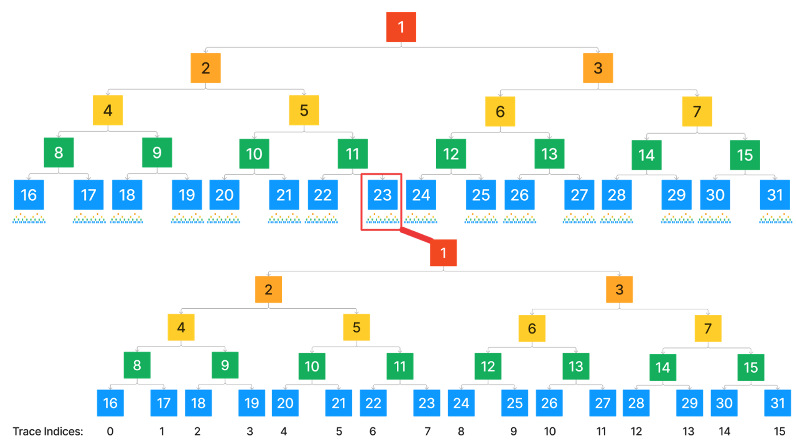

Fault Dispute Game
Table of Contents
Overview
The Fault Dispute Game (FDG) is a specific type of dispute game that verifies the validity of a root claim by iteratively bisecting over output roots and execution traces of single block state transitions down to a single instruction step. It relies on a Virtual Machine (VM) to falsify invalid claims made at a single instruction step.
Actors, i.e. Players, interact with the game by making claims that dispute other claims in the FDG. Each claim made narrows the range over the entire historical state of L2, until the source of dispute is a single state transition. Once a time limit is reached, the dispute game is resolved, based on claims made that are disputed and which aren't, to determine the winners of the game.
Definitions
Virtual Machine (VM)
This is a state transition function (STF) that takes a pre-state and computes the post-state. The VM may access data referenced during the STF and as such, it also accepts a proof of this data. Typically, the pre-state contains a commitment to the proof to verify the integrity of the data referenced.
Mathematically, we define the STF as where
- is the pre-state
- is an optional proof needed for the transition from to .
PreimageOracle
This is a pre-image data store. It is often used by VMs to read external data during its STF. Before successfully executing a VM STF, it may be necessary to preload the PreimageOracle with pertinent data. The method for key-based retrieval of these pre-images varies according to the specific VM.
Execution Trace
An execution trace is a sequence where each is a VM state and for each , , . Every execution trace has a unique starting state, , that's preset to a FDG implementation. We refer to this state as the ABSOLUTE_PRESTATE.
Claims
Claims assert an output root or the state of the FPVM at a given instruction. This is represented as
ClaimHash, a bytes32 representing either an output root or a commitment to the last VM state in a
trace. A FDG is initialized with an output root that corresponds to the state of L2 at a given L2 block number, and
execution trace subgames at SPLIT_DEPTH + 1 are initialized with a claim that commits to the entire execution trace
between two consecutive output roots (a block n -> n+1 state transition). As we'll see later, there can be multiple
claims, committing to different output roots and FPVM states in the FDG.
DAG
A Directed Acyclic Graph representing the relationship between claims, where:
- is the set of nodes, each representing a claim. Formally, , where is a claim.
- is the set of directed edges. An edge exists if is a direct dispute against through either an "Attack" or "Defend" move.
Subgame
A sub-game is a DAG of depth 1, where the root of the DAG is a Claim and the children are Claims that counter the
root. A good mental model around this structure is that it is a fundamental dispute between two parties over a single
piece of information. These subgames are chained together such that a child within a subgame is the root of its own
subgame, which is visualized in the resolution section. There are two types of sub-games in the fault
dispute game:
- Output Roots
- Execution Trace Commitments
At and above the split depth, all subgame roots correspond to output roots, or commitments to the full state of L2 at a given L2 block number. Below the split depth, subgame roots correspond to commitments to the fault proof VM's state at a given instruction step.
Game Tree
The Game Tree is a binary tree of positions. Every claim in the DAG references a position in the Game Tree.
The Game Tree has a split depth and maximum depth, SPLIT_DEPTH and MAX_GAME_DEPTH respectively, that are both
preset to an FDG implementation. The split depth defines the maximum depth at which claims about
output roots can occur, and below it, execution trace bisection occurs. Thus, the Game Tree contains
positions, where is the MAX_GAME_DEPTH (unless , in which case there's only 1 position).
The full game tree, with a layer of the tree allocated to output bisection, and sub-trees after an arbitrary split depth, looks like:

Position
A position represents the location of a claim in the Game Tree. This is represented by a "generalized index" (or gindex) where the high-order bit is the level in the tree and the remaining bits is a unique bit pattern, allowing a unique identifier for each node in the tree.
The gindex of a position can be calculated as , where:
- is a function returning the depth of the position in the Game Tree
- is a function returning the index of the position at its depth (starting from the left).
Positions at the deepest level of the game tree correspond to indices in the execution trace, whereas claims at the split depth represent single L2 blocks' output roots. Positions higher up the game tree also cover the deepest, right-most positions relative to the current position. We refer to this coverage as the trace index of a Position.
This means claims commit to an execution trace that terminates at the same index as their Position's trace index. That is, for a given trace index , its ClaimHash corresponds to the th state in the trace.
Note that there can be multiple positions covering the same trace index.
GAME_DURATION
This is an immutable, preset to a FDG implementation, representing the duration of the game. Each top level team will receive half of this duration on their initial chess clocks.
Core Game Mechanics
This section specifies the core game mechanics of the FDG. The full FDG mechanics includes a specification for Bonds. Readers should understand basic game mechanics before reading up on the Bond specification.
Actors
The game involves two types of participants (or Players): Challengers and Defenders. These players are grouped into separate teams, each employing distinct strategies to interact with the game. Team members share a common goal regarding the game's outcome. Players interact with the game primarily through moves.
Moves
A Move is a challenge against an existing claim and must include an alternate claim asserting a different trace. Moves can either be attacks or defenses and serve to update to DAG by adding nodes and edges targeting the disputed claim.
Moves within the fault dispute game can claim two separate values: output roots and execution trace
commitments. At and above the SPLIT_DEPTH, claims correspond to output roots, while below the split depth, they
correspond to execution trace commitments.
Initially, claims added to the DAG are uncontested (i.e. not countered). Once a move targets a claim, that claim is considered countered. The status of a claim — whether it's countered or not — helps determine its validity and, ultimately, the game's winner.
Attack
A logical move made when a claim is disagreed with.
A claim at the relative attack position to a node, n, in the Game Tree commits to half
of the trace of the n’s claim.
The attack position relative to a node can be calculated by multiplying its gindex by 2.
To illustrate this, here's a Game Tree highlighting an attack on a Claim positioned at 6.

Attacking the node at 6 moves creates a new claim positioned at 12.
Defend
The logical move against a claim when you agree with both it and its parent.
A defense at the relative position to a node, n, in the Game Tree commits to the first half of n + 1’s trace range.

Note that because of this, some nodes may never exist within the Game Tree. However, they're not necessary as these nodes have complimentary, valid positions with the same trace index within the tree. For example, a Position with gindex 5 has the same trace index as another Position with gindex 2. We can verify that all trace indices have valid moves within the game:

There may be multiple claims at the same position, so long as their ClaimHash are unique.
Each move adds new claims to the Game Tree at strictly increasing depth.
Once a claim is at MAX_GAME_DEPTH, the only way to dispute such claims is to step.
Step
At MAX_GAME_DEPTH, the position of claims correspond to indices of an execution trace.
It's at this point that the FDG is able to query the VM to determine the validity of claims,
by checking the states they're committing to.
This is done by applying the VM's STF to the state a claim commits to.
If the STF post-state does not match the claimed state, the challenge succeeds.
/// @notice Perform an instruction step via an on-chain fault proof processor.
/// @dev This function should point to a fault proof processor in order to execute
/// a step in the fault proof program on-chain. The interface of the fault proof
/// processor contract should adhere to the `IBigStepper` interface.
/// @param _claimIndex The index of the challenged claim within `claimData`.
/// @param _isAttack Whether or not the step is an attack or a defense.
/// @param _stateData The stateData of the step is the preimage of the claim at the given
/// prestate, which is at `_stateIndex` if the move is an attack and `_claimIndex` if
/// the move is a defense. If the step is an attack on the first instruction, it is
/// the absolute prestate of the fault proof VM.
/// @param _proof Proof to access memory nodes in the VM's merkle state tree.
function step(uint256 _claimIndex, bool _isAttack, bytes calldata _stateData, bytes calldata _proof) external;
Step Types
Similar to moves, there are two ways to step on a claim; attack or defend. These determine the pre-state input to the VM STF and the expected output.
- Attack Step - Challenges a claim by providing a pre-state, proving an invalid state transition. It uses the previous state in the execution trace as input and expects the disputed claim's state as output. There must exist a claim in the DAG that commits to the input.
- Defense Step - Challenges a claim by proving it was an invalid attack, thereby defending the disputed ancestor's claim. It uses the disputed claim's state as input and expects the next state in the execution trace as output. There must exist a claim in the DAG that commits to the expected output.
The FDG step handles the inputs to the VM and asserts the expected output.
A step that successfully proves an invalid post-state (when attacking) or pre-state (when defending) is a
successful counter against the disputed claim.
Players interface with step by providing an indicator of attack and state data (including any proofs)
that corresponds to the expected pre/post state (depending on whether it's an attack or defend).
The FDG will assert that an existing claim commits to the state data provided by players.
PreimageOracle Interaction
Certain steps (VM state transitions) require external data to be available by the PreimageOracle.
To ensure a successful state transition, players should provide this data in advance.
The FDG provides the following interface to manage data loaded to the PreimageOracle:
/// @notice Posts the requested local data to the VM's `PreimageOralce`.
/// @param _ident The local identifier of the data to post.
/// @param _execLeafIdx The index of the leaf claim in an execution subgame that requires the local data for a step.
/// @param _partOffset The offset of the data to post.
function addLocalData(uint256 _ident, uint256 _execLeafIdx, uint256 _partOffset) external;
The addLocalData function loads local data into the VM's PreimageOracle. This data consists of bootstrap data for
the program. There are multiple sets of local preimage keys that belong to the FaultDisputeGame contract due to the
ability for players to bisect to any block state transition since the configured genesis, the
_execLeafIdx parameter enables a search for the starting / disputed outputs to be performed such that the contract
can write to and reference unique local keys in the PreimageOracle for each of these
transitions.
| Identifier | Description |
|---|---|
0 | Parent L1 head hash at the time of the proposal |
1 | Starting output root hash (commits to block # n) |
2 | Disputed output root hash (commits to block # n + 1) |
3 | Starting L2 block number (block # n) |
4 | Chain ID |
For global keccak256 preimages, there are two routes for players to submit:
- Small preimages atomically.
- Large preimages via streaming.
Global keccak256 preimages are non-context specific and can be submitted directly to the PreimageOracle via the
loadKeccak256PreimagePart function, which takes the part offset as well as the full preimage. In the event that the
preimage is too large to be submitted through calldata in a single block, challengers must resort to the streaming
option.
Large Preimage Proposals
Large preimage proposals allow for submitters to stream in a large preimage over multiple transactions, along-side
commitments to the intermediate state of the keccak256 function after absorbing/permuting the bit block.
This data is progressively merkleized on-chain as it is streamed in, with each leaf constructed as follows:
/// @notice Returns a leaf hash to add to a preimage proposal merkle tree.
/// @param input A single 136 byte chunk of the input.
/// @param blockIndex The index of the block that `input` corresponds to in the full preimage's absorbtion.
/// @param stateCommitment The hash of the full 5x5 state matrix *after* absorbing and permuting `input`.
function hashLeaf(
bytes memory input,
uint256 blockIndex,
bytes32 stateCommitment
) internal view returns (bytes32 leaf) {
require(input.length == 136, "input must be exactly the size of the keccak256 rate");
leaf = keccak256(abi.encodePacked(input, blockIndex, stateCommitment));
}
Once the full preimage and all intermediate state commitments have been posted, the large preimage proposal enters a
challenge period. During this time, a challenger can reconstruct the merkle tree that was progressively built on-chain
locally by scanning the block bodies that contain the proposer's leaf preimages. If they detect that a commitment to
the intermediate state of the hash function is incorrect at any step, they may perform a single-step dispute for the
proposal in the PreimageOracle. This involves:
- Creating a merkle proof for the agreed upon prestate leaf (not necessary if the invalid leaf is the first one, the setup state of the matrix is constant.) within the proposal's merkle root.
- Creating a merkle proof for the disputed post state leaf within the proposal's merkle root.
- Computing the state matrix at the agreed upon prestate (not necessary if the invalid leaf is the first one, the setup state of the matrix is constant.)
The challenger then submits this data to the PreimageOracle, where the post state leaf's claimed input is absored into
the pre state leaf's state matrix and the SHA3 permutation is executed on-chain. After that, the resulting state matrix
is hashed and compared with the proposer's claim in the post state leaf. If the hash does not match, the proposal
is marked as challenged, and it may not be finalized. If, after the challenge period is concluded, a proposal has no
challenges, it may be finalized and the preimage part may be placed into the authorized mappings for the FPVM to read.
Team Dynamics
Challengers seek to dispute the root claim, while Defenders aim to support it. Both types of actors will move accordingly to support their team. For Challengers, this means attacking the root claim and disputing claims positioned at even depths in the Game Tree. Defenders do the opposite by disputing claims positioned at odd depths.
Players on either team are motivated to support the actions of their teammates. This involves countering disputes against claims made by their team (assuming these claims are honest). Uncontested claims are likely to result in a loss, as explained later under Resolution.
Game Clock
Every claim in the game has a Clock. A claim inherits the clock of its grandparent claim in the DAG (and so on). Akin to a chess clock, it keeps track of the total time each team takes to make moves, preventing delays. Making a move resumes the clock for the disputed claim and pauses it for the newly added one.
A move against a particular claim is no longer possible once the parent of the disputed claim's Clock
has exceeded half of the GAME_DURATION. By which point, the claim's clock has expired.
Resolution
Resolving the FDG determines which team won the game. To do this, we use the internal sub game structure. Each claim within the game is the root of its own sub game. These subgames are modeled as nested DAGs, each with a max depth of 1. In order for a claim to be considered countered, only one of its children must be uncountered. Subgames can also not be resolved until all of their children, which are subgames themselves, have been resolved and the potential opponent's chess clock has run out. Because each claim is the root of its own sub-game, truth percolates upwards towards the root claim by resolving each individual sub-game bottom-up.
In a game like the one below, we can resolve up from the deepest subgames. Here, we'd resolve b0
to uncountered and a0 to countered by walking up from their deepest children, and once all children of the
root game are recursively resolved, we can resolve the root to countered due to b0 remaining uncountered.
https://github.com/ethereum-optimism/optimism/assets/8406232/d2b708a0-539e-439d-96bd-c2f66f3a45f8
Another example is this game, which has a slightly different structure. Here, the root claim will also
be countered due to b0 remaining uncountered.
Given these rules, players are motivated to move quickly to challenge all dishonest claims.
Each move bisects the historical state of L2 and eventually, MAX_GAME_DEPTH is reached where disputes
can be settled conclusively. Dishonest players are disincentivized to participate, via backwards induction,
as an invalid claim won't remain uncontested. Further incentives can be added to the game by requiring
claims to be bonded, while rewarding game winners using the bonds of dishonest claims.